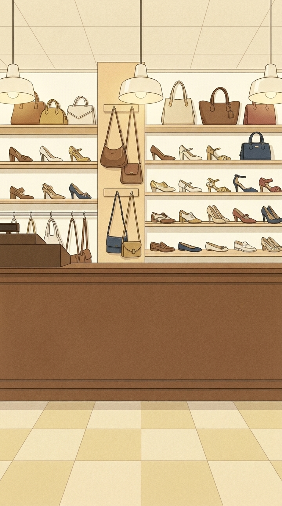
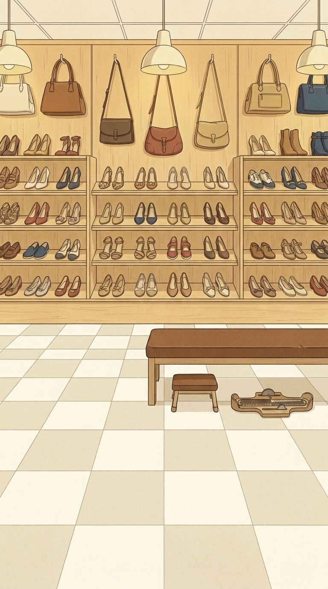

1 Clean-line mid-century Spanish commercial poster illustration (generic 1950s-60s shop advertising look, not imitating any specific artist): thin dark ink outlines (#2B2118), flat colour areas with minimal soft shading, subtle printed paper grain over the whole image, warm and elegant, respectful. Palette: leather brown #816040, cream #F1E6B2, gold #CEB888, navy #2E4674, warm off-white #FBF7EA, ink #2B2118, small accents of muted red #B5553C.
Same illustration style, line quality, grain and palette as the FIRST attached image (the approved shop facade). Interior of that same family shoe shop, inspired by the SECOND attached photo (layout of shelves and bags), seen strictly frontally from the shop floor, vertical 9:16.
Warm, welcoming, orderly, craftsmanship: back wall of light wooden shelves with neatly arranged generic women shoes (decorative, simplified, not real products) and leather handbags hanging above, soft warm light, cream ceiling with simple lamps, cream-and-light-beige tiled floor.
The image will be used as a BACKGROUND behind text and buttons: keep the lower 55 percent visually calm and simple (large flat areas, little detail), no people, no characters, no text, no signs, no logos, no mirrors with reflections.
COMPOSITION: a wooden shop counter runs across the image with its top edge at about 35 percent of the image height; below it the counter front panel and the tiled floor.

2 Clean-line mid-century Spanish commercial poster illustration (generic 1950s-60s shop advertising look, not imitating any specific artist): thin dark ink outlines (#2B2118), flat colour areas with minimal soft shading, subtle printed paper grain over the whole image, warm and elegant, respectful. Palette: leather brown #816040, cream #F1E6B2, gold #CEB888, navy #2E4674, warm off-white #FBF7EA, ink #2B2118, small accents of muted red #B5553C.
Same illustration style, line quality, grain and palette as the FIRST attached image (the approved shop facade). Interior of that same family shoe shop, inspired by the SECOND attached photo (layout of shelves and bags), seen strictly frontally from the shop floor, vertical 9:16.
Warm, welcoming, orderly, craftsmanship: back wall of light wooden shelves with neatly arranged generic women shoes (decorative, simplified, not real products) and leather handbags hanging above, soft warm light, cream ceiling with simple lamps, cream-and-light-beige tiled floor.
The image will be used as a BACKGROUND behind text and buttons: keep the lower 55 percent visually calm and simple (large flat areas, little detail), no people, no characters, no text, no signs, no logos, no mirrors with reflections.
COMPOSITION: a wooden shop counter runs across the image with its top edge at about 48 percent of the image height; below it the counter front panel and the tiled floor.

3 Clean-line mid-century Spanish commercial poster illustration (generic 1950s-60s shop advertising look, not imitating any specific artist): thin dark ink outlines (#2B2118), flat colour areas with minimal soft shading, subtle printed paper grain over the whole image, warm and elegant, respectful. Palette: leather brown #816040, cream #F1E6B2, gold #CEB888, navy #2E4674, warm off-white #FBF7EA, ink #2B2118, small accents of muted red #B5553C.
Same illustration style, line quality, grain and palette as the FIRST attached image (the approved shop facade). Interior of that same family shoe shop, inspired by the SECOND attached photo (layout of shelves and bags), seen strictly frontally from the shop floor, vertical 9:16.
Warm, welcoming, orderly, craftsmanship: back wall of light wooden shelves with neatly arranged generic women shoes (decorative, simplified, not real products) and leather handbags hanging above, soft warm light, cream ceiling with simple lamps, cream-and-light-beige tiled floor.
The image will be used as a BACKGROUND behind text and buttons: keep the lower 55 percent visually calm and simple (large flat areas, little detail), no people, no characters, no text, no signs, no logos, no mirrors with reflections.
COMPOSITION: no counter; the back wall of shelves fills the upper half and a simple low wooden bench with a shoe-fitting stool and a foot measuring tool stands in the lower part, over the tiled floor.